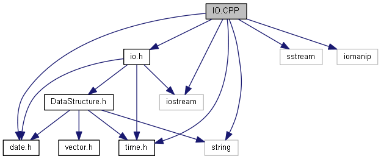
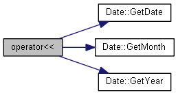
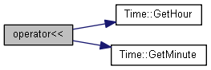
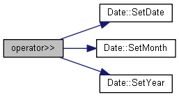

IO.CPP File Reference
#include "io.h"#include "time.h"#include "date.h"#include <iostream>#include <sstream>#include <string>#include <iomanip>
Include dependency graph for IO.CPP:

Go to the source code of this file.
Functions | |
| istream & | operator>> (istream &input, Date &D) |
| Contains input/output operators of all classes. More... | |
| ostream & | operator<< (ostream &os, const Date &D) |
| istream & | operator>> (istream &input, Time &T) |
| ostream & | operator<< (ostream &os, const Time &T) |
Function Documentation
◆ operator<<() [1/2]
| ostream& operator<< | ( | ostream & | os, |
| const Date & | D | ||
| ) |
Definition at line 44 of file IO.CPP.
References Date::GetDate(), Date::GetMonth(), Date::GetYear(), and MonthsNames.
Here is the call graph for this function:

◆ operator<<() [2/2]
| ostream& operator<< | ( | ostream & | os, |
| const Time & | T | ||
| ) |
Definition at line 74 of file IO.CPP.
References Time::GetHour(), and Time::GetMinute().
Here is the call graph for this function:

◆ operator>>() [1/2]
| istream& operator>> | ( | istream & | input, |
| Date & | D | ||
| ) |
Contains input/output operators of all classes.
- Version
- 01
Definition at line 22 of file IO.CPP.
References Date::SetDate(), Date::SetMonth(), and Date::SetYear().
Here is the call graph for this function:

◆ operator>>() [2/2]
| istream& operator>> | ( | istream & | input, |
| Time & | T | ||
| ) |
Definition at line 55 of file IO.CPP.
References Time::SetHour(), and Time::SetMinute().
Here is the call graph for this function: